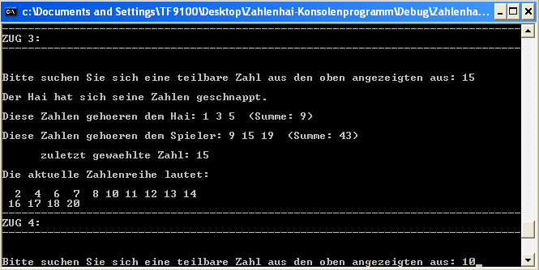
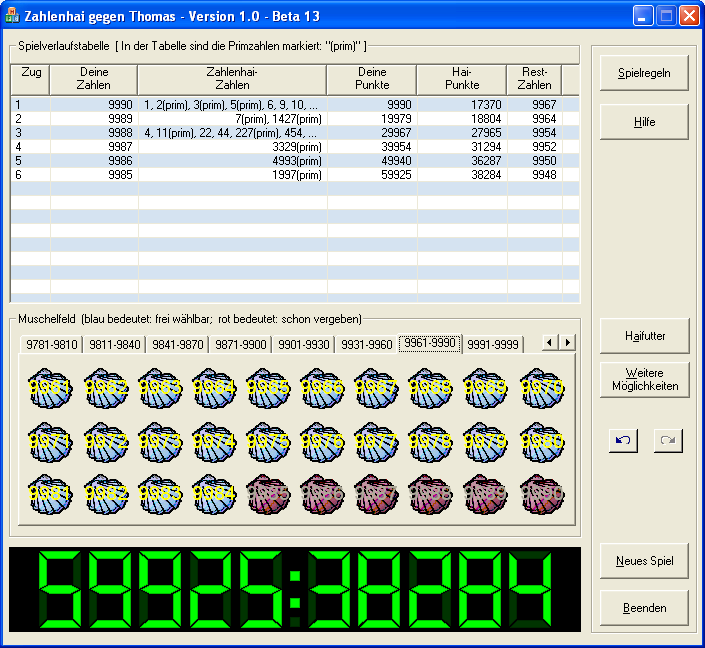
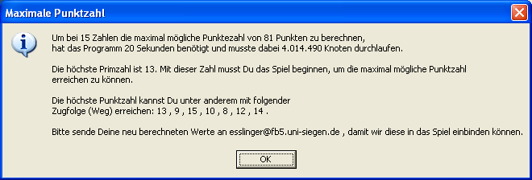
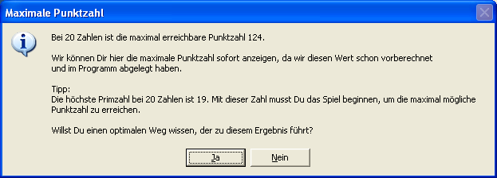
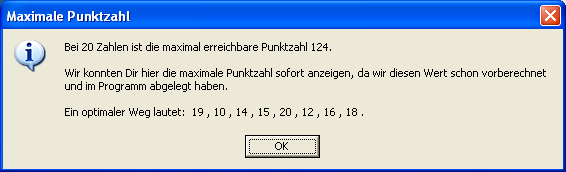
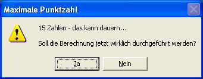
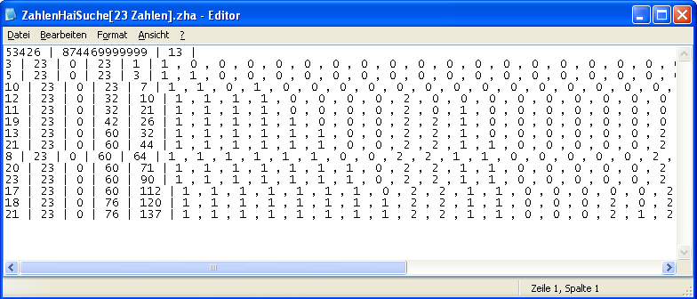

Entstehung des Zahlenhai-Spiels
Die Idee zum Zahlenhai-Spiel stammt von Herrn Lothar Carl, der auch die ursprüngliche Version in Delphi programmierte. Das Zahlenhai-Spiel dient zur Verbesserung und zum spielerischen Training der Kenntnisse über Teilbarkeiten und Primzahlen in den Klassen 6 bis 10.
Hier findest Du das Original-Zahlenhai-Spiel:
http://www.learn-line.nrw.de/angebote/neuemedien/medio/mathe/coalgebr/zahlhai/hai01.htm
Das folgende Bild zeigt die ursprüngliche Fassung. Dieses Programm ist Freeware, aber nicht Open-Source.
Herr Carl hat uns dankenswerterweise erlaubt, seine Idee und seinen Spielnamen für eine Neuimplementierung uneingeschränkt zu nutzen.
Das neue Zahlenhai-Programm hier ist Open-Source und Freeware.
1. Programmieren lernen
Innerhalb der Ausbildung im 1. Lehrjahr zum Fachinformatiker wurde das Programm von Herrn Carl als Vorlage gewählt, um Programmierkenntnisse in C++ zu vermitteln und diese Kenntnisse später durch Erweiterungen des Programms zu vertiefen.
Zuerst wurde das Verfahren des Zahlenhai-Spiels in C++ als Konsolenprogramm implementiert und später durch eine grafische Oberfläche ergänzt.

Danach wurde das Programm stetig erweitert. Die erste Erweiterung bestand darin, das Spiel mit mehr als 50 Zahlen spielen zu können (50 Zahlen waren die Obergrenze in dem Spiel von Herrn Carl). Dafür wurde ein Reiter-Control verwendet, auf dem sich 30 Buttons befinden, die je nach ausgewähltem Reiter ihre Beschriftung und somit auch ihren Wert ändern.
Dadurch wurde die maximal mögliche Anzahl an Zahlen auf 9999 erhöht. Die Grenze ist im Quellcode so vorgegeben und ist bedingt durch die Größe der Buttons und der Reiter. Es wäre auch nicht sinnvoll, mit noch mehr Zahlen zu spielen, da man bei so einer Menge gleichzeitig sehr viele Teiler von sehr vielen Zahlen berücksichtigen muss und dadurch auch schnell den Übeblick über das Spiel verliert.
Das Spielfenster und alle Inhalte darin haben eine feste Größe. Wir hätten gern das Fenster wenigstens in vertikaler Richtung so größenveränderlich gemacht, dass sich die Spielverlaufstabelle entsprechend anpasst, leider bot uns der Layout-Manager im Ressourceneditor von Visual C++ 6.0 und Visual C++ 7.1 (Visual Studio 2003) keine Möglichkeit für das sogenannte "Andocken" von graphischen Elementen an die Dialogmasken. Nur die Spalten der Spielverlaufstabelle sind in ihrer Breite veränderbar, damit sich der Spieler wirklich alle Punkte, die der Zahlenhai erhalten hat, anschauen kann. Die Spalten passen sich aber nicht automatisch ihrem Inhalt an.(TODO: Dem Spieler eine Möglichkeit geben. die Spaltenbreite wieder in den Ausgangszustand zurück zusetzten).

2. Maximal erreichbare Punktzahl ausgeben
Während des Testens kam mehrfach die Frage auf, wie viel Punkte der Spieler maximal erreichen kann. Um dies zu beantworten, wurde eine Funktion geschrieben, welche die maximal erreichbare Punktzahl ausrechnet.
Die hier implementierte Berechnung lässt, das Programm jedes mögliche Spiel und jeden möglichen Spielzug spielen und die erreichten Punkte vergleichen (auch als Brute-Force-Ansatz bekannt). Drückt man auf den Button "Start", welcher sich in dem "Weitere Möglichkeiten" Fenster befindet, enthält man:

Die maximal möglichen Punktzahlen sind für die Zahlenvorräte von 1 bis 22 schon im Programm abgelegt und müssen nicht noch einmal berechnet werden, sondern werden sofort ausgegeben.

Außerdem kann sich der Spieler auch noch einen optimalen Weg (also die Folge der Zahlen, die zur maximalen Punktzahl führt) anzeigen lassen.

Da die Berechnung für eine größere Anzahl an Zahlen sehr lange dauert, wird der Spieler vorher gefragt, ob diese Funktion wirklich ausgeführt werden soll.

3. Durchführung und Wiederaufsetzten bei überlangen Berechnungen
Da die Berechnung der maximal möglichen Punkte bei größeren Zahlen extrem lange dauert, musste ein Weg gefunden werden, um die Berechnung der Zahlen unterbrechen und zu einem späteren Zeitpunkt wieder fortsetzen zu können (z.B. weil der Strom ausfiel oder man den Rechner für andere Aufgaben brauchte). Dazu werden alle für die Berechnung benötigten Zwischenwerte in geringen Zeitabständen in einer Textdatei gespeichert. Die Datei "ZahlenHaiSuche[Anzahl der Zahlen].zha" wird in demselben Ordner gespeichert, in dem sich auch die Datei "Zahlenhai.exe" befindet, und lässt sich mit einem Texteditor öffnen und anschauen.

Wenn jetzt eine neue Berechnung der maximalen Punktzahl gestartet wird, schaut das Programm erst, ob schon eine Datei mit gespeicherten Werten existiert, liest diese ein und setzt dann die Suche an der eingelesenen Stelle fort.(TODO:Was für Werte gespeichert werden und wie dies funktioniert wird in der Hilfe noch genauer erklärt). Auch ohne Wissen darüber, was für Werte in der Datei gespeichert werden und wie die Brute-Force-Suche funktioniert, kannst Du, einen schnellen Rechner und viel Zeit vorausgesetzt, auch selbst neue Werte berechnen.
Für Zahlen > 22 bitten wir um Deine Mithilfe: siehe Challenge. Wir haben die Werte bis 22 Zahlen vorberechnet. Wenn Du für Zahlen > 22 eine maximale Punktzahl und einen optimalen Weg gefunden hast, würden wir uns sehr freuen, wenn Du diese Ergebnisse dann an esslinger@fb5.uni-siegen.de sendest.
4. Tastatursteuerung
Um die Benutzerfreundlichkeit in dem Programm zu erhöhen, wurde auch noch eine reine Tastatursteuerung implementiert, die es dem Benutzer ermöglich, sich mit den Pfeiltasten frei auf den mit Zahlen beschrifteten Muscheln, sowie den dazugehörigen Reitern, zu bewegen. Vor der Implementierung der Steuerung konnte man sich nur mit den Pfeiltasten links und rechts, sowie der Tabulator-Taste, durch das Programm navigieren, und nur mit der Leertaste Buttons betätigen. Jetzt kann das Spiel auch komplett ohne die Benutzung der Maus gespielt werden.
5. Tests
An den Tests des Programms waren neben den Mitarbeitern aus der Abteilung, einigen Azubi-Kollegen auch Test-User im Internet beteiligt. Durch diese Tests kamen auch viele Vorschläge zur Verbesserung des Programms wie zum Beispiel die ToolTips, die Steuerung über die Tastatur oder das Durchführen langer Berechnungen durch Wiederaufsetzten.
6. Optische Gestaltung
Damit das Programm mehr wie ein Spiel und weniger wie eine einfache Büroanwendung aussieht, musste auch die optische Aufmachung des Spieles verbessert werden. Der erste Schritt zu einer besseren optischen Gestaltung war die Veränderung der Buttons für den Zahlenvorrat. Dafür wurde das Bild einer Muschel verändert und den verschiedenen Zuständen eines Buttons, also "gedrückt", "deaktiviert" oder "Focus", zugewiesen. Die Buttons an sich wurden transparent gemacht, so dass es so aussieht als wären die Ränder der Muschel auch der Rand des Buttons.
Im nächsten Schritt wurde ein Haifisch-Bild in das Spielfenster eingefügt und die normalen ToolTips wurden durch abgerundete Fenster, sogenannte Balloon Tips, ersetzt.
Nachdem die Bilder ausgewählt waren wurde die Schriftfarbe an die Farbe der Bilder angepasst. Zusätzlich wurde die Spielverlaufstabelle in den Farben der Muscheln eingefärbt.
Um den Dialog noch mehr wie ein Spiel aussehen zu lassen wurden zwei Dialogfelder, die aussehen wie LED-Anzeigen, hinzugefügt welche, während des Spieles, den Punktestand anzeigen und, nach dem Spiel, anzeigen ob Du gewonnen, verloren oder unentschieden gespielt hast.
Da die Farbe später noch eingestellt werden soll musste auch der Optionen-Dialog angepasst werden. Optionen wurden in "Standard", "Special" und "Maximalwerte" unterteilt und auf Reitern ausgelagert, so dass jede Optionen Art für sich alleine steht. In dem Reiter "Special" soll man später noch die Möglichkeit haben sich die Farben der Tabelle und die Schriftfarben, ähnlich wie bei MS Paint, selber auszusuchen.
Die Gestaltung der Buttons für den Zahlenvorrat, die LED-Anzeigen und die farbige Darstellung der Spielverlaufstabelle wurden mit Hilfe von Quellcodebeispielen von den Usern der Seite http://www.codeproject.com erstellt.
7. TODOs - Wie man das Programm weiter verbessern kann.
Das Zahlenhai-Programm kann natürlich noch weiterentwickelt werden:
Allgemeine Hinweise zur Benutzeroberfläche findest Du hier. Und Tipps zum Spielverlauf findest Du hier.
Aus rechtlichen Gründen müssen wir explizit auf die Lizenzbestimmungen / Haftungsausschluss hinweisen.